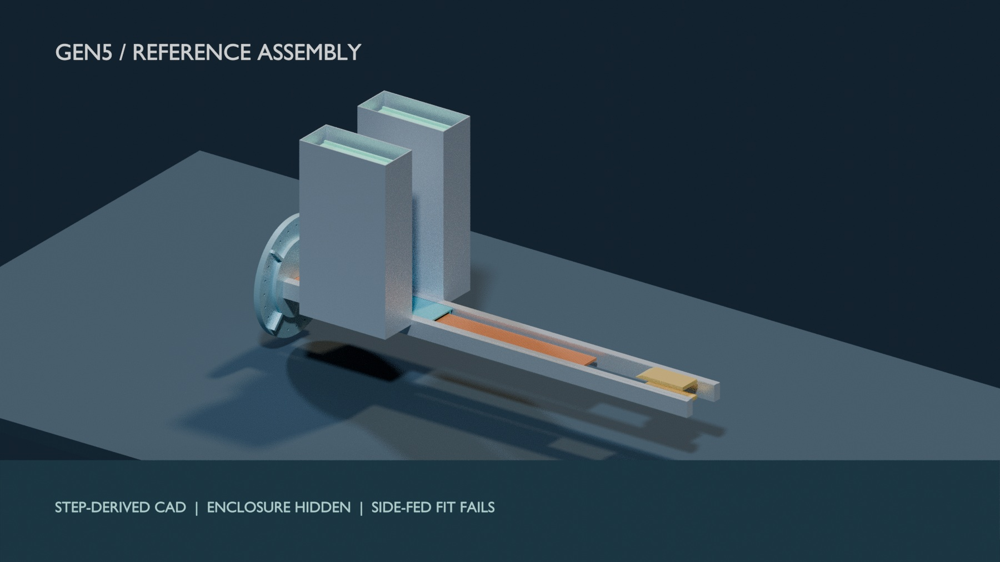
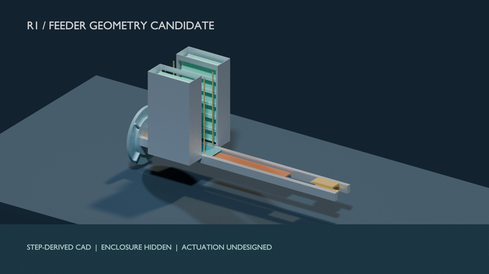
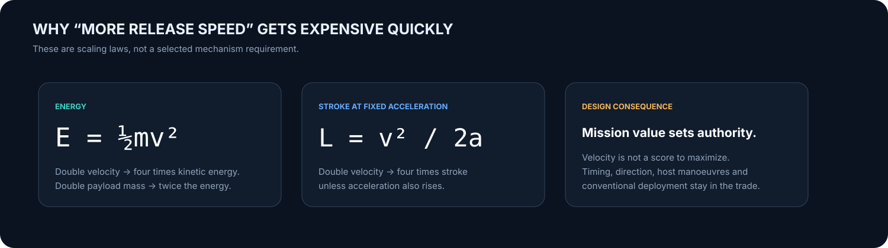

The system that was evaluated.
A 1.3 m powered stroke, reusable permanent-magnet sled, double-sided ironless stator, pulse store, arrest concept and two six-satellite cassette concepts. The model results belong to this reference configuration.
It fails the 3U installed-mass screen and its side-fed track/cassette placement. Finite-geometry force analysis also challenges the older shot rating. This is a complete, reviewable computational finding; it is not a flight-product release.


A path clearance screen, not a new baseline.
A separate 570 mm widened enclosure and transfer concept clears 12/12 scripted 3U envelope routes against listed fixed solids and swept boxes. It does not prove a functional feeder, launch retention, tolerance margin, host accommodation or a viable installed mass.
Build the first article for a mission, then revisit the extreme.
Gen6 is the proposed first instrumented prototype programme; its speed and accuracy must follow a named payload, target state and allowed load. The separate 1 km/s-class research objective would need roughly 5.1 km of ideal travel at 10 g or 204 m at 250 g, before losses, arrest, loads and payload qualification. No Gen6 mechanism, payload class or achieved velocity has been selected.
